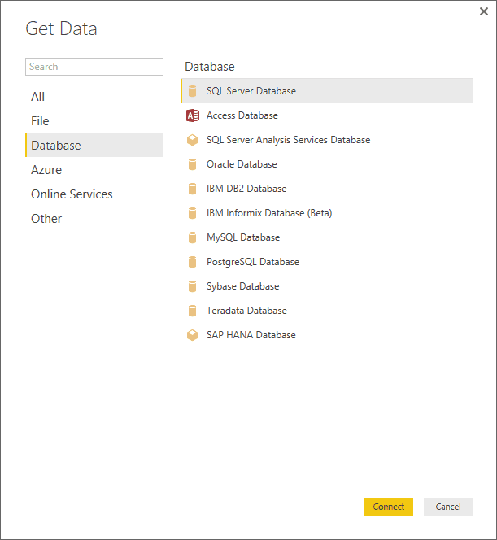
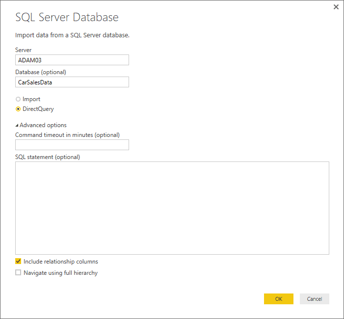
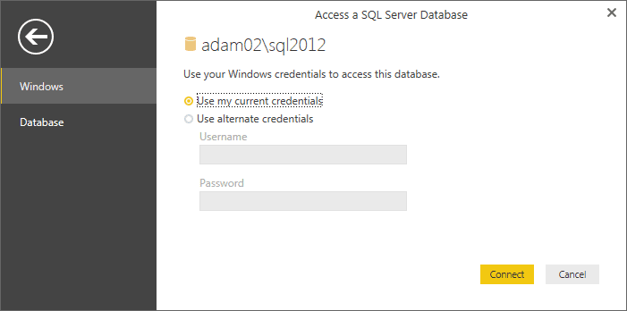
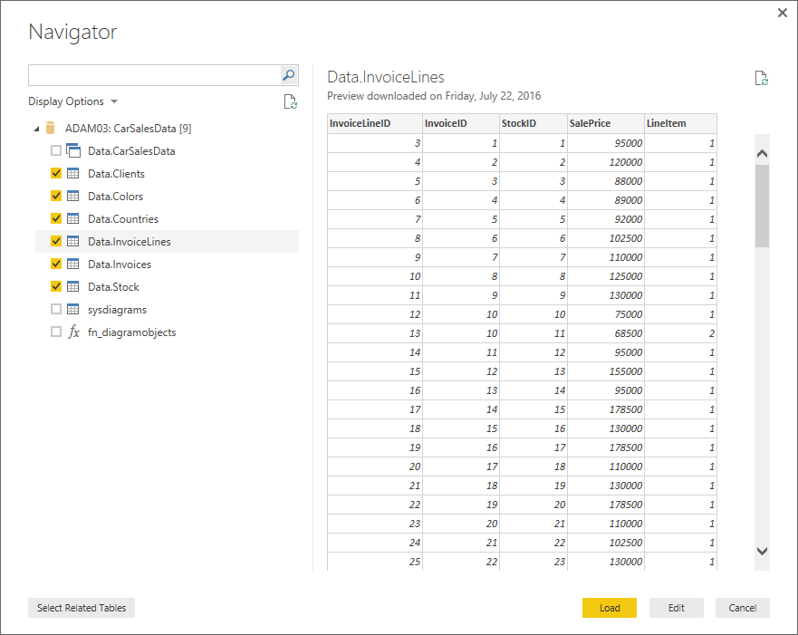

Hi All,
What is Power BI?
Microsoft Power BI is a collection of software apps that helps to turn our data into useful, coherent, and interactive insights. The data can be in any form such as excel spread sheets or cloud based data warehouses. Power BI is very useful for connecting to your data sources and to visualize which data is important to us and it also lets us to share the visuals or insights with anyone or everyone we want to.
What is Direct Query?
As we can see its name, Direct Query which means a method that lets us to retrieve data directly from data sources, at the query time. The final part of the query imports the snapshots of data in the memory but DirectQuery (DQ) doesn’t store any data.
As we write multiple queries in DirectQuery, it just goes to the data source for every single query and pulls the data from there to anywhere we want (In this case, Power BI).
In all this process, the data that is fetched from the data sources remains in the data sources before, during, and after the execution of query.
The connection of DirectQuery in Power BI doesn’t load the data model in Power BI. DirectyQuery doesn’t store second copy of the data, so there will be no excess consumption of the memory. The simple meaning of DirectQuery can be defined as the direct connection of Power BI to the data source. Whenever we see any visualization in the report, the data that we see comes directly from the data source.
Data Sources supported by DirectQuery:-
When we use the Import Data functionality, it supports all types of data sources. But DirectQuery supports only limited number of data sources. For example, the connection to excel file through DirectQuery is not possible as it doesn’t support this connection. Usually the data sources that are relational database models, or the data source of modelling engine, are supported by DirectQuery mode.
The below list shows some of the data sources that are supported by DirectQuery:
- Oracle Database
- SQL Server
- Vertica
- Amazon Redshift
- Azure SQL Database
- IBM Netezza
- Impala
- Google BigQuery
- Teradata Database
- SAP HANA
The above list is not fixed to only these data sources as new updates of Power BI Connectors may support more data sources.
How to connect Power BI using DirectQuery?
When we use Get Data option under Home ribbon of Power BI Desktop, it shows us two options such as Import and DirectQuery which means we can directly import the data or we can use DirectQuery to get the data.
The difference between these two options is as follows:
• Import:
With this option, we can import only selected tables and columns into Power BI Desktop. When we interact with any visualization in Power BI, it uses the imported data to shows us the created visualizations. When we want to see the data changes, we need to refresh the data that imports the dataset again from the data source.
• DirectQuery:
With the option of DirectQuery, the data is not imported or copied into Power BI Desktop. The data appear in fields for relational sources of data such that selected tables and columns appear in Fields list. In case of multi-dimensional sources such as SAP Business Warehouse, the dimensions and measures of selected table appear in the Field list. When we create visualizations in Power BI Desktop, the queries are run each time we see any visualization. Therefore, we always view the current data in the visualizations.
There are various data modelling and transformations available in Power BI when we use DirectQuery. Some useful benefits of DirectQuery are as following:
- DirectQuery helps us to build visualizations with large datasets.
- The data in the reports in always refreshed by DirectQuery.
- There is no limitation of 1-GB dataset in DirectQuery.
Let us see how we can connect SQL Server using DirectQuery in Power BI:
The SQL Server will require data source that enables data connection from Power BI. The steps that we need to follow are as:
- Open Power BI Desktop.
- Under the Home ribbon, click Get Data button.
- The dialog box shows various options to choose as data sources.
- Click database option that will show a dialog box.
- Click the ‘Connect’ button and it will open another dialog box.
- Then we need to enter the server name in text box and we also need to give a database name.
- Now we need to click on ‘DirectQuery’ to connect live SQL Server Database
- After that click ‘OK’. Now the ‘Access a SQL server database’ dialog will appear. You need to select Use my current credentials option in order to access the database.
- After clicking ‘Connect’, the Power BI Desktop will start connecting to the server that will display navigator dialog containing all the tables and views in the database that are authorized to view on the server.
- Now, click on the checkboxes for the tables, columns that we need in our visualizations.
- Finally click ‘Load’ and it will open a window displaying the tables that we selected in the field list.



